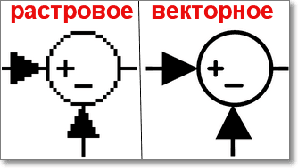

Основные понятия анимации
Для более полного понимания принципов анимации, необходимо знать ряд простейших понятий.
Концепт – общее, краткое описание идеи, с целью передать основной смысл разработки, ее цели. Так же концептом является небольшой набросок, рисунок, отображающий основные черты персонажа. Прежде чем сделать окончательный рисунок того или иного персонажа, иногда концепт перерисовывают десятки раз, перебирая десятки вариантов.Шрек до, и после концепта.
Сценарий – сюжетная схема, по которой создается некоторое действие (спектакль, фильм, мультфильм…). Предназначен для четкого понимания замысла автора сценария исполнителю (воплотителю).
Раскадровка – это последовательная серия рисунков, которые рассказывают картинками всю историю, сценарий с начала и до конца. Для рисования раскадровки, достаточно навыков рисования на уровне «палка палка огуречик».
К каждой сцене рисуется картинка с указанием того, что происходит в кадре. Параллельно с прорисовыванием раскадровки, из уже готовых материалов, начинается сборка аниматика. Также раскадровку называют сторибордом.
Раскадровка эпизода из мультфильма «Франкенвинн».
Аниматик – это анимированная раскадровка. Здесь определяется хронометраж (затрата времени) всего фильма/ролика, его частей, эпизодов и сцен. На этом этапе получается четкое видение будущего фильма/ролика, являющееся будущим руководством для всего производства.
Практика 1
Разработай идею для анимированного мультфильма или рекламы не более чем на 1.5 – 2 минуты.
Помни, что этапы создания анимации зависят от того, какова цель этой анимации. Если это анимация простого рекламного баннера с простейшими элементами, то можно обойтись всего лишь проработкой концепта, раскадровкой (не обязательно), аниматиком (не обязательно), и уже непосредственно анимацией.
Проработка рекламного ролика – более трудоемкий процесс. Он требует как описания идеи, концепта, так и полного написания сценария, с последующими раскадровкой, аниматиком, наложением звука, анимацией и монтажем.
Самой сложной является работа с анимационным фильмом. Это очень трудоемкий процесс, требующий определенного терпения, умения, а также любви и увлеченности данным ремеслом.
Начни разработку идеи по этапам, разбирая каждый пункт.
1. Напиши концепт идеи. На этом этапе идет общее, краткое описание идеи, если это рекламный ролик или мультипликационный фильм – то краткая подача сюжета, его сути, смысла и основных моментов. Ниже приведен пример концепции фильма «Аватар»:
«Частично парализованный ветеран войны Джек прибывает на планету Пандора, населенную гуманоидной расой На’ви. Землянин оказывается в центре конфликта родной и местной культур, оказывающимся началом смертельно опасного приключения.»
2. Проработай не более двух персонажей для истории или рекламного ролика.
3. Сделай не большую раскадровку на основе уже готового сценария. К каждой сцене нарисуй последовательность картинок, напоминающую комикс, являющийся графическим кратким описанием идеи, каркасом, на основе которого будет создаваться уже основная анимация, как показано на рисунке ниже. Раскадровка делается на листе бумаги.
Анимация в Pencil 2d
Pencil - приложение для анимации, позволяющее создавать традиционную рисованную анимацию (мультфильм) с использованием растровой и векторной графики.
Pencil бесплатная программа с открытым исходным кодом. Официальный сайт программы https://www.pencil2d.org/
Область для рисования находится в середине экрана
Инструменты слева (панель tools) используются для рисования на странице.

Временная шкала (Time Line) в нижней части экрана используется для добавления дополнительных кадров и управления анимированной последовательностью.
Цветовая палитра находится в правой части экрана.
Практика 2
Скачай архив с программой Pencil 2d, распакуй его, а затем запусти программу.
Создай анимацию прыгающего мяча. Начни с рисования шара в первом кадре. Ты можешь рисовать карандашом, используя растровый или векторный слой.
1)Ты можете изменять растровый на векторный рисунок, щелкнув по слою битмапа или векторному слою в строке времени в нижней части экрана. Начни с Bitmap. Нажмите на битмап-слой на временной шкале, чтобы убедиться, что он выбран.
2)Выбери инструмент «Карандаш» и установи размер между 10-11 пикселями с помощью ползунка.

3)Нарисуй круг в верхней части области для рисования.

4)Добавь ещё один кадр во временной шкале
5)Временная строка показывает, что ты сейчас работаешь во 2-м кадре анимации.
6)Нажми значок Onion Skin Previous Frame. Когда эта опция включена, ты увидишь предыдущий ключевой кадр (чуть светлее). Когда эта опция не активна, ты не видишь предыдущий ключевой кадр. Убедитесь, что значок Onion Skin Previous Frame включен.
7)Нарисуйте мяч в середине области для рисования.
8)Добавь ключ 3.
9)Нарисуй мяч в нижней части графической области.
10)Добавь ключ 4.
11)Нарисуй мяч в середине графической области.
12)Добавь ключ 5.
13)Нарисуй мяч в верхней части графической области
14)Выключи Onion Skin Previous Frame (Показать предыдущий кадр). Выбери первый кадр на линии времени.
15)Установи количесво кадров в секунду (frames per seconds(FPS)) 12, нажми кнопку Play и наслаждайся полученной анимацией.
16)Покажи анимацию своему преподавателю и сохрани её. File → Save
Векторные изображения
Как тебе известно, растровые изображения это изображения, которые состоят из крошечных прямоугольных точек индивидуального цвета — пикселей, объединенных воедино. Каждый пиксель имеет свое особое расположение на картинке и свое индивидуальное значение цвета.
Векторные это изображения, состоящие из множества отдельных, масштабируемых объектов (линий и кривых), которые определены с помощью математических уравнений.
Поэтому их можно увеличивать либо уменьшать без потери качества. Формула остается той же, меняется только масштаб. Формула, как правило, описывает плавную кривую и при любом значении эта кривая так и останется плавной.
Если ты попробуешь увеличить картинку с векторной графикой, то ты заметишь, что пиксели практически незаметны, то есть качество осталось на прежнем уровне. Если увеличивать изображение с растровой графикой, то оно заметно потеряет в качестве.
Pencil 2d поддерживает и векторный формат, выполни следующее упражнение, чтобы в этом разобраться.
Практика 3
1. Создай новый файл. File → New.
2. Нажми на Vector Layer на временной панеле. Точка, расположенная рядом с векторный слоем станет черной, когда он выбран.
3. Нажми на инструмент Pen(перо). Используй ползунок, чтобы установить размер между 10-11.
4. Нарисуй шар в верхней части графической области.
5. Добавь больше 4 кадров, которые показывают шарик, движущийся по экрану. У тебя будет всего 5 кадров.
6. Выбери 5-ый кадр на временной панеле. В векторном рисунке можно изменять форму.
7. Выбери инструмент Smudge Tool. Нажми пальцем на объекте, чтобы появились квадратики.
8. Щелкни и перетащи один из квадратиков, чтобы изменить форму.

9. Перетащи разные квадратики в разные места, чтобы получилась сумасшедшая форма.
10. Сохрани свою анимацию и покажи её преподавателю, всё это ты уже делал в предыдущем задании.
Практика 4
Создай анимацию того, как ты рисуешь покемона. Ниже ты найдешь картинку с шагами. Постарайся задействовать как можно большее количество кадров (минимум 30). Не забывай, что предыдущий кадр можно дублировать.

GIF анимация
GIF анимация – это популярный формат изображений, который поддерживает анимацию картинок. GIF анимацию очень часто используют для рекламных баннеров в интернете вместо больших и неудобных в подключении видео файлов.
GIF это сокращение от полного названия Graphics Interchange Format. Стандарт этого изображения поддерживает только 8-битную палитру, из-за чего для отображения изображения может быть использовано только 256 цветов. Но за счет такой узкой палитры цветов удается добиться небольших размеров файлов с изображениями по сравнению с другими форматами.

Создать такую анимацию можно двумя способами:
1. Веб-сервисы
2. Графический редактор
GIF из видео
Для создания gif из видео воспользуйся ресурсом giphy
Вставь ссылку на ролик из youtube

Выбери начало и продолжительность
Добавь заголовок и нажми кнопку создать GIF (Create GIF)

Дождись выполнения обработки
Наслаждайся полученным результатом
Для загрузки нажми кнопку Download
Практика 5
Создай свою шедевральную гифку из youtube ролика. Результат сохрани на компьютере и отправь преподавателю по электронной почте.
Практика 6
Создание gif в графическом редакторе
1. Скачай, распакуй и запусти программу UnFREEz
2. Создай 7 простых рисунков в программе Pain.NET. Первый рисунок фон и цифра 1, второй рисунок фон и цифра 2, но на другом месте и так далее. Рисунки сохраняй в формате GIF.
Должно получиться что-то вот такое
3. Перетащи все сохраненные рисунки в программу UnFREEz и нажми кнопку Make Animated GIF
4. Наслаждайся полученным результатом
Домашнее задание
1) По созданной в классе раскадровке, используя Pencil 2D, создай свой анимационный ролик
2) Создай GIF-ку на тему "Компьютер"
3) Сделай анимацию создания Человека-паука